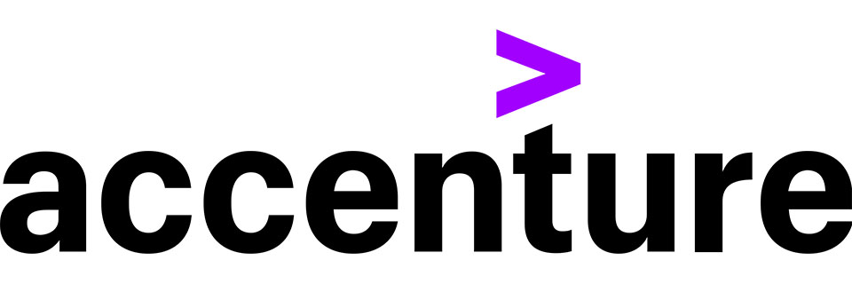

Projects

NASA UAV Obstacle Avoidance Database Capstone Project
There is a growing demand for delivery systems to be more autonomous and efficient, specifically with the use of drones. In order to make drones more autonomous for delivery, we were tasked with the objective to create an obstacle avoidance database. The demand for an obstacle avoidance database has increased because drones can be utilized to make deliveries faster, more efficiently and most importantly autonomously, while taking care so that they do not crash into obstacles and using the most optimized flight path to the destination. Our purpose of creating an obstacle avoidance database is to develop a model that can determine obstacles from LiDAR and satellite imagery through machine learning and feed it into a database as new images of data are updated.
Skills and Concepts Demonstrated: Python, Numpy, Trimesh, Plyfile, LasPy, Pandas, Clustering, Data Segmentation, SQL Database, Google Cloud Virtual Machine, KPConv, TensorFlow, Keras, Machine Learning, Convolutional Neural Network, Data Modeling, YOLOv5, Roboflow, MapBox API, USGS, LiDAR
Project Team Members:
Kevin Brand (kbrand93@gmail.com)
Mark Santos (mksantos6677@gmail.com)
Steven Zhu (stevnzhu@gmail.com)
Explore Repository

Chipotle Marketing Project
In this project, our group was given a survey done by Chipotle. Chipotle wanted to improve customer satisfaction and retention. Our job was to first do data cleaning on the dataset which included removing rows with null values or inserting a median value depending on the completeness of that row, and also fixing any misspellings. Once we were done with the data cleaning process, it was now our job to take the clean data and begin to cluster the dataset using K-Means clustering based on the features and responses given in the survey. Each cluster represented a specific customer profile group. Once the clustering process was completed, we must begin to analyze the clusters and build their customer profile. Once the customer profiles were completed, we then looked for data that stood out to us and we began to find ways to satisfy that customer so that we could increase customer retention and attract customers to Chipotle. The results were delivered via PowerPoint using data Visualization.
Skills and Concepts Demonstrated: Python, NumPy, Pandas, MatPlotLib, K-Means Clustering, Data Cleaning and Exploration, Data Visualization, Microsoft Excel, Pivot Tables, PowerPoint, Feature Importance
Project Team Members:
Melanie He
Mark Santos (mksantos6677@gmail.com)
Steven Zhu (stevnzhu@gmail.com)
Explore Repository

SQL Social Media App Project
In this project, our class was tasked with implementing a SQL database into a real world business problem. Our group decided that we created an imaginary social media app that is similar to Instagram. Using this business situation, we formulated business questions and problems. In order to answer the business questions, we created a SQL database and inserted data into the database. After creating the SQL database, we did a number of SQL queries to answer the business questions and presented our findings with a PowerPoint deck.
Skills and Concepts Demonstrated: SQL, MySQL, Querying, PowerPoint, Data Mapping, Mockaroo for psuedo data, SQL Tables, Business Insights, Decision Making, Data Analysis, Relational Databases
Project Team Members:
Steven Zhu (stevnzhu@gmail.com)
Explore Repository

Machine Learning on Titanic Dataset
In this project our class was tasked with making survival predictions based on the Titanic dataset found on Kaggle. Using the dataset, we trained a logistic regression model that can predict the survivors based on a set of features about the passengers on the Titanic.
Skills and Concepts Demonstrated: Python, Data Cleaning and Exploration, Pandas, Data Visualization, MatPlotLib, Model Building, SkLearn, Logisitic Regression Model
Explore Repository

Iris Dataset Project
The target of the project is to have a hands on full data analytics experience from A to Z. That means starting with raw data and reading it into python then doing some analytical and statistical observations on the data and finally doing some supervised and unsupervised learning on the data on one of the most famous datasets machine learning datasets called the IRIS Classification Dataset.
Skills and Concepts Demonstrated: Python, Pandas, Numpy, MatPlotLib, SkLearn, Scipy, Data Loading and Cleaning, Statistical Exploring and Analysis , Machine Learning, Non-Supervised and Supervised Learning, K-Means Clustering, PCA Reduction
Explore Repository
Certifications

Accenture Virtual Experience Program on Forage (Completed Jan 2023)
During this virtual internship experience I was able to learn about project understanding, data cleaning and modeling, data visualization and storytelling and lastly, presenting to a client. I was able to get hands on experience of what it is like to received a project from a company, then doing data exploration and analysis to create a presentation to give insights and recommendations on how to solve the business problem.
Skills and Concepts Demonstrated: Teamwork, Strategy, Project Planning, Data Understanding, Data Modeling, Data Analysis, Storytelling, Data Visualization, Presentations, Communication, Public Speaking, Programming Skills (Python), PowerPoint Presentation, Microsoft Excel.
Explore Repository

Quantium Virtual Internship via Forage (In Progress)
The Quantium Virtual Internship is offered via Forage. In this virtual internship, we replicate life in the retail analytics and strategy team at Quantium. I am responsible for delivering highly valued data analytics and insights to help the business make strategic decisions.
Skills and Concepts Demonstrated: Data Wrangling, Data Visualization, Programming Skills (Python), Statistics, Critical Thinking, Commerical Thinking, Presentation Skills
Explore Repository